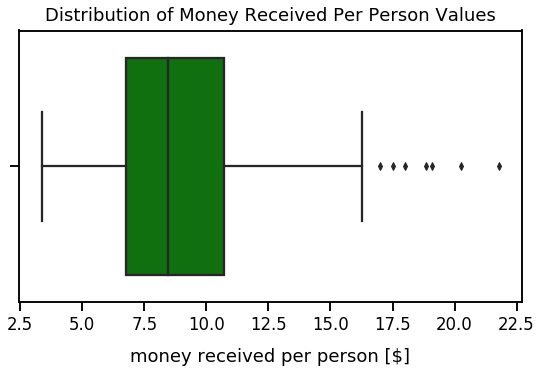

Create New Columns Based on Operations
- December 24, 2018 • 6 min read
- Key Terms: python, pandas
A pivotal part of data analysis is to create new columns based on some operation. This tutorial will cover multiple ways to do that.
Import Modules
import pandas as pd
import seaborn as sns
import numpy as np
import matplotlib.pyplot as plt
% matplotlib inline
Get Tips Dataset
Let's get the tips dataset from the Python seaborn visualization library and assign it to the DataFrame df_tips.
df_tips = sns.load_dataset('tips')
Each row represents a unique meal at a restaurant for a party of people; the dataset contains the following fields:
| column name | column description |
|---|---|
total_bill |
financial amount of meal in U.S. dollars |
tip |
financial amount of the meal's tip in U.S. dollars |
sex |
gender of server |
smoker |
boolean to represent if server smokes or not |
day |
day of week |
time |
meal name (Lunch or Dinner) |
size |
count of people eating meal |
Preview the first 5 rows of df_tips using the pandas series head() method.
df_tips.head()
| total_bill | tip | sex | smoker | day | time | size | |
|---|---|---|---|---|---|---|---|
| 0 | 16.99 | 1.01 | Female | No | Sun | Dinner | 2 |
| 1 | 10.34 | 1.66 | Male | No | Sun | Dinner | 3 |
| 2 | 21.01 | 3.50 | Male | No | Sun | Dinner | 3 |
| 3 | 23.68 | 3.31 | Male | No | Sun | Dinner | 2 |
| 4 | 24.59 | 3.61 | Female | No | Sun | Dinner | 4 |
Create New Column Based on Mathematical Operations of Column(s)
We can perform mathematical operations on columns such as addition, division and multiplication.
Addition
Let's create a new column called total_money_received that's the addition of the total_bill and tip column. This total amount is how much money the restaurant receives for each order.
df_tips['total_money_received'] = df_tips['total_bill'] + df_tips['tip']
Let's see a preview of these three columnns.
df_tips[['total_bill', 'tip', 'total_money_received']].sample(n=5)
| total_bill | tip | total_money_received | |
|---|---|---|---|
| 106 | 20.49 | 4.06 | 24.55 |
| 163 | 13.81 | 2.00 | 15.81 |
| 124 | 12.48 | 2.52 | 15.00 |
| 155 | 29.85 | 5.14 | 34.99 |
| 54 | 25.56 | 4.34 | 29.90 |
Division
Let's create a new column called tip_proportion_of_total_bill that's a calculation of tip values divided by their respective total_bill value.
df_tips['tip_proportion_of_total_bill'] = df_tips['tip']/df_tips['total_bill']
Let's preview these three columns.
df_tips[['total_bill', 'tip', 'tip_proportion_of_total_bill']].sample(n=5)
| total_bill | tip | tip_proportion_of_total_bill | |
|---|---|---|---|
| 127 | 14.52 | 2.00 | 0.137741 |
| 25 | 17.81 | 2.34 | 0.131387 |
| 235 | 10.07 | 1.25 | 0.124131 |
| 65 | 20.08 | 3.15 | 0.156873 |
| 12 | 15.42 | 1.57 | 0.101816 |
For aesthetic purposes of the values in the tip_proportion_of_total_bill, I will round all values to four decimal places using the round() method below.
df_tips['tip_proportion_of_total_bill'] = df_tips['tip_proportion_of_total_bill'].round(decimals=4)
Additionally, I want to create a new column called money_received_per_person that's a calculation of total_money_received divided by size. I round values in this new column to two decimal places.
df_tips['money_received_per_person'] = df_tips['total_money_received']/df_tips['size']
df_tips['money_received_per_person'] = df_tips['money_received_per_person'].round(decimals=2)
Let's preview these three columns.
df_tips[['total_money_received', 'size', 'money_received_per_person']].sample(n=5)
| total_money_received | size | money_received_per_person | |
|---|---|---|---|
| 64 | 20.23 | 3 | 6.74 |
| 61 | 15.81 | 2 | 7.90 |
| 141 | 41.00 | 6 | 6.83 |
| 150 | 16.57 | 2 | 8.28 |
| 155 | 34.99 | 5 | 7.00 |
Multiplication
I want to create a new column called tip_percentage_of_total_bill that simply takes our column called tip_proportion_of_total_bill and multiplies the value by 100. I round values in this new column to two decimal places.
df_tips['tip_percentage_of_total_bill'] = df_tips['tip_proportion_of_total_bill']*100
df_tips['tip_percentage_of_total_bill'] = df_tips['tip_percentage_of_total_bill'].round(decimals=3)
Let's preview these columns recently used for multiplication.
df_tips[['total_bill', 'tip', 'tip_proportion_of_total_bill', 'tip_percentage_of_total_bill']].head()
| total_bill | tip | tip_proportion_of_total_bill | tip_percentage_of_total_bill | |
|---|---|---|---|---|
| 0 | 16.99 | 1.01 | 0.0594 | 5.94 |
| 1 | 10.34 | 1.66 | 0.1605 | 16.05 |
| 2 | 21.01 | 3.50 | 0.1666 | 16.66 |
| 3 | 23.68 | 3.31 | 0.1398 | 13.98 |
| 4 | 24.59 | 3.61 | 0.1468 | 14.68 |
Create New Column Based on Mapping of Current Values to New Values
In our day column, we see the following unique values printed out below using the pandas series unique method.
df_tips['day'].unique()
[Sun, Sat, Thur, Fri]
Categories (4, object): [Sun, Sat, Thur, Fri]
I don't like how the days are shortened names. The name Sun can be mapped to a longer and more colloquial name of Sunday.
In pandas, we can use the series map() method to map our current values, the shortened
day names, to longer more colloquial names of days, our new values that we'll create in a new column called day_long_name.
Below is a Python dictionary that assigns the short day names as keys and the longer names to their respective values.
short_day_name_to_long_name = {'Sun': 'Sunday', 'Sat': 'Saturday', 'Thur': 'Thursday', 'Fri': 'Friday'}
Let's assign the map() method to the day column and set the argument arg equal to our short_day_name_to_long_name dictionary. We'll set this equal to be the values in a new column assigned to day_long_name.
df_tips['day_long_name'] = df_tips['day'].map(arg=short_day_name_to_long_name)
Let's preview a few random rows of day and day_long_name.
df_tips[['day', 'day_long_name']].sample(n=5)
| day | day_long_name | |
|---|---|---|
| 40 | Sat | Saturday |
| 192 | Thur | Thursday |
| 89 | Thur | Thursday |
| 202 | Thur | Thursday |
| 98 | Fri | Friday |
Create New Column Based on Conditions Across Various Columns
If I were the owner of this restaurant, I'd want to learn more about the context of large groups who ordered a large dollar amount of food. To learn more about this category, I want to create a new column in our DataFrame with these characteristics.
First, let's view the distribution of the column money_received_per_person.
sns.set_context('talk')
plt.figure(figsize=(9, 5))
sns.boxplot(df_tips['money_received_per_person'], color='green')
plt.title("Distribution of Money Received Per Person Values", y=1.015)
plt.xlabel("money received per person [$]", labelpad=14);

We can see the median is roughly at 8.50 U.S. dollars.
Below, I assign variables for the 75th and 25th percentile of the money_received_per_person column that we'll use in our analysis to help create the category of big spenders per person.
large_amt_paid_per_person = round(df_tips['money_received_per_person'].quantile(q=0.75), 2)
large_amt_paid_per_person
10.71
small_amt_paid_per_person = round(df_tips['money_received_per_person'].quantile(q=0.25), 2)
small_amt_paid_per_person
6.75
Below, I assign a variable conditions to be a list of conditions that characterize people served at our restaurant by the columns money_received_per_person and size. In our first index of the variable conditions, that condition is met if money_received_per_person is greater than large_amt_paid_per_person and size is greater than or equal to 3.
conditions = [
(df_tips['money_received_per_person'] > large_amt_paid_per_person) & (df_tips['size'] >= 3),
(df_tips['money_received_per_person'] > large_amt_paid_per_person) & (df_tips['size'] < 3),
(df_tips['money_received_per_person'].between(left=small_amt_paid_per_person, right=large_amt_paid_per_person)) & (df_tips['size'] >= 3),
(df_tips['money_received_per_person'].between(left=small_amt_paid_per_person, right=large_amt_paid_per_person)) & (df_tips['size'] < 3),
(df_tips['money_received_per_person'] < small_amt_paid_per_person) & (df_tips['size'] >= 3),
(df_tips['money_received_per_person'] < small_amt_paid_per_person) & (df_tips['size'] < 3)
]
There's a variable called choices that's a list of text strings that classify this category of people that meet this condition. In the example described above, I want to classify that group of people that spend a lot of money per person and are large groups as big spenders & large group.
choices = ['big spenders & large group', 'big spenders & small group',
'medium spenders & large group', 'medium spenders & small group',
'small spenders & large group', 'small spenders & small group']
The numpy select() method returns an array drawn from elements in a choicelist. We can use our conditions above and are outcome choices to classify those groups of people based on money spent per person and group size.
In the select() method below, I set the argument condlist to be our conditions and the argument choicelist to be our choices. I created the variables conditions and choices.
df_tips['party_category'] = np.select(condlist=conditions, choicelist=choices)
For the new column created party_category, I apply the value_counts() method to see a count of each of the unique values in the column.
df_tips['party_category'].value_counts()
medium spenders & small group 82
big spenders & small group 48
medium spenders & large group 40
small spenders & large group 31
small spenders & small group 30
big spenders & large group 13
Name: party_category, dtype: int64
Let's preview the relevant columns used in this analysis.
df_tips[['money_received_per_person', 'size', 'party_category']].sample(n=5)
| money_received_per_person | size | party_category | |
|---|---|---|---|
| 167 | 9.05 | 4 | medium spenders & large group |
| 226 | 6.04 | 2 | small spenders & small group |
| 65 | 7.74 | 3 | medium spenders & large group |
| 231 | 6.23 | 3 | small spenders & large group |
| 25 | 5.04 | 4 | small spenders & large group |